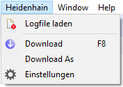
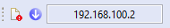
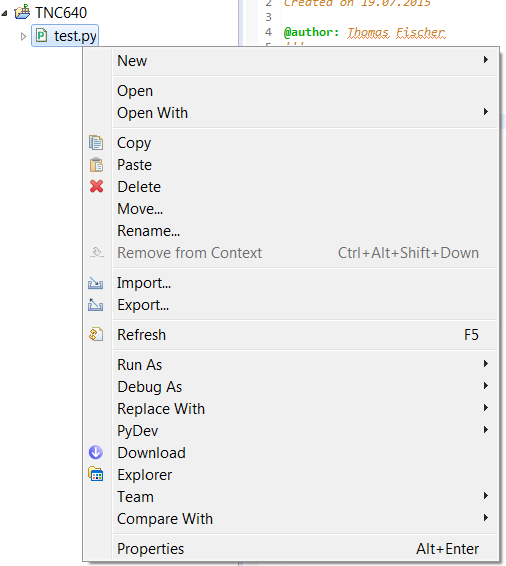
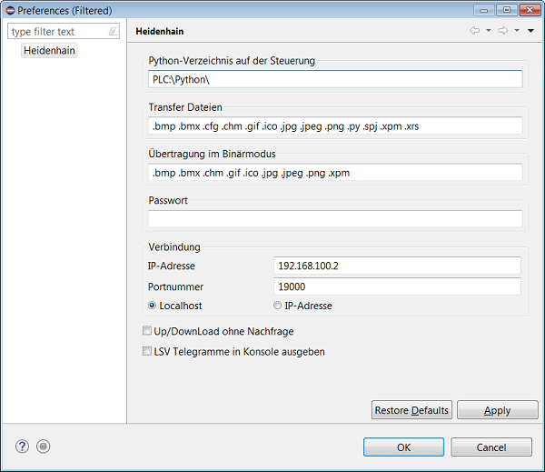

Menü
| Download | Aktive Datei im Editor auf die Steuerung übertragen |
| Download As | Aktive Datei im Editor, unter einem anderen Namen und Pfad, auf die Steuerung übertragen |
| Einstellungen | Öffnet die Einstellungs-Seite |
Toolbar
| Aktive Datei im Editor auf die Steuerung übertragen | |
| Eingestellte IP-Adresse |
Kontextmenü im Projekt-Explorer
| Download | Alle ausgewählten Dateien und Ordner auf die Steuerung übertragen |
| Explorer | Verzeichnis in dem sich die Datei befindet im Explorer öffnen |
Einstellungen
| Python-Verzeichnis auf der Steuerung | Grundverzeichnis auf der Steuerung. Alle Dateien und Ordner eines Projektes werden in das angegebene Verzeichnis übertragen |
| Transfer-Dateien | Die Dateiendungen der Dateien welche auf die Steuerung übertragen werden sollen |
| Übertragungen im Binärmodus | Die Dateiendungen der Dateien die im Binärmodus auf die Steuerung übertragen werden müssen |
| Passwort | Gespeichertes Passwort Sollte ein Passwort benötigt werden und es ist keines oder das falsche eingetragen, wird bei der Übertragung nach dem Passwort gefragt. |
| IP-Adresse | Die Netzwerkadresse der Steuerung auf welche die Daten übertragen werden |
| Portnummer | Portnummer die für die Übertragung verwendet wird. Sollte nicht geändert werden! |
| Localhost/IP-Adresse | Auswahl Localhost oder IP-Adresse |
| Up/Download ohne Nachfrage | Ist die Option gesetzt wird die Datenübertragung ohne nachfrage gestartet |
| LSV Telegramme in Konsole ausgeben | Die Netzwerk-Kommunikation wird in der Konsole ausgegeben Diese Option ist nur für Debug zwecke und sollte für den normalen gebrauch nicht aktiviert sein |